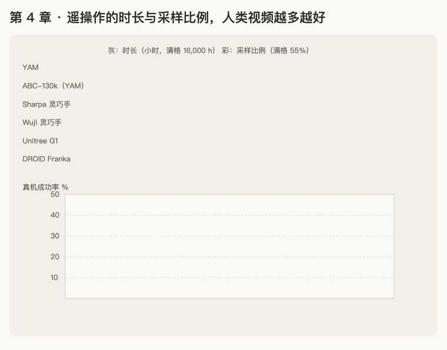

第 4 章 · 数据配方：人类视频、UMI、遥操作各管什么
本章回答：GR00T 2 的 43.6 万小时预训练数据由哪三类组成？它们分工是什么？标注怎么做？"人类视频越多越好"的实验是怎么设计的？
讲解日期：2026-11-15 · 上一章：第 3 章 三阶段预训练 · 下一章：第 5 章 X-Adapt
对应原文：materials/text/gr00t2-whitepaper.txt§4.2 L954–L1028；附录 C.1 L3412–L3600、C.2 L3714、C.3 Tab. 11 L3740–L3752、C.4 L3851–L3895；数据集卡materials/official-snapshots/hf-human-1m-100k-README.md
本章缩写：UMI = Universal Manipulation Interface（通用 / 操作 / 接口）；SLAM = Simultaneous Localization and Mapping（同时 / 定位 / 与 / 建图）；DoF = Degrees of Freedom（自由度）；DROID = Distributed Robot Interaction Dataset（分布式 / 机器人 / 交互 / 数据集）；F1 = F1 分数（精确率和召回率的调和平均）；SEM = Standard Error of the Mean（均值 / 标准误）；OOD = Out-of-Distribution（分布 / 之外）。全部缩写见 附录 · 缩写与术语表
讲解
第一步：三类数据的分工（2026-11-15）
类比：学厨艺的三种材料。 人类视频像看了几十万小时的美食节目（见识广，但不是你的手）；UMI 像拿着和餐厅同款的锅铲在家练（工具对了，但不在餐厅后厨）；遥操作像在餐厅后厨、用餐厅的灶真刀真枪地做（最贵、最少，但最"对口"）。
白皮书原话：人类视频提供 "broad coverage"，UMI 提供 "task-focused demonstrations with robot-compatible action representations"，遥操作 "grounds the model in embodiment-specific behaviors"（L955–L959）。
| 来源 | 时长 | episode | 关键特征 | 原文 |
|---|---|---|---|---|
| Human-1M（筛后） | 402,730 h | ≈ 1,375 万 | 5.15 万采集者、12.3 万场景；头戴相机（单目或双目），约 9 万 h 带腕相机；约 8 万 h 是 studio 数据；其中 3,000 h 是 in-lab"机器人对齐"数据 | L966–L976、L3433–L3441 |
| UMI-10K | 10,184 h | 94.2 万 | 2,897 个任务，单任务 ≤ 1.2%；356 类物体、49 种技能、2,798 种技能-物体组合；含反事实指令对 | L1002–L1007 |
| 遥操作 | 23.5k h | 116 万 | 见下表 | L1011–L1016 |
遥操作明细（Tab. 11，L3740–L3752，Share = 在机器人数据里被采样的比例）：
| 来源 | 本体 | episode | 时长 | Share |
|---|---|---|---|---|
| YAM | 双臂平行夹爪 | 610.7k | 15,146 h | 51.2% |
| ABC-130k | YAM | 130.7k | 3,591 h | 10.4% |
| Sharpa | 双臂 + 22-DoF Sharpa 手 | 202.6k | 2,890 h | 20.6% |
| Wuji | 天机 7-DoF 臂 + 20-DoF Wuji 手 | 80.9k | 1,256 h | 14.0% |
| G1 | Unitree G1 人形 | 57.7k | 275 h | 1.3% |
| DROID | Franka Panda 单臂 | 76k | 350 h | 2.5% |
例子：采样比例 ≠ 时长比例。 Sharpa 只占遥操作时长的 \(2890/23508\approx12.3\%\)，却被采样 20.6%；YAM 自采占 \(15146/23508\approx64.4\%\)，采样 51.2%。灵巧手被上采样了——Stage 2 就是"增加 YAM 和灵巧手来源的贡献"（L892–L893）。
一句话：人类视频管"见识"，UMI 管"对口的任务演示"，遥操作管"这副身体能执行的动作"；采样时灵巧手被上调。
第二步：人类视频里到底有什么（2026-11-15）
类比：一份带字幕、带动作捕捉的录像。 不只是画面，还附了"每只手每个关节在哪"和"这几秒在干什么"。
| 内容 | 表示 | 原文 |
|---|---|---|
| 手部姿态 | 每只手 21 个 3D 关键点（手腕 + 每根手指 4 个），单位米，在头部相机坐标系 | L3462–L3464 |
| 头部姿态 | 头戴参考相机的 6-DoF 位姿，SLAM 估计，每 episode 一个世界坐标系 | L3464–L3466 |
| 语言 T1 | 1–2 句 episode 总结：目标、主要动作、关键物体 | L3467–L3469 |
| 语言 T2 | 1–10 s 一段、连续、带时间戳的动作描述，写明哪只手、什么动作、什么物体 | L3469–L3471 |
标注引擎 Flora（§4.2.4、附录 C.4）：三个模型——Flora-TempSeg 切动作时间段，Flora-Captioner 给每段写一句自足的祈使句指令，Flora-Rewarder 生成结果 / 稠密 / 量规奖励。先在人工标注上微调，再用 GRPO 在可验证奖励（时间 F1、边界准确率、覆盖度减事实错误）上训。WGO-Bench 时间分割 F1：Flora 50.3 vs 次好的 GPT-6 Astra 46.0；重标 40 万小时 Human-1M 约 2 天（L3853–L3895）。
例子：一句 T2 长什么样（原文例子，L3875）："hold tea leaves with right hand, pass tea leaves to left hand"——写明了手、动作、物体，脱离上下文也能读懂。
一句话：人类视频 = 画面 + 21 点手部姿态 + 头部位姿 + 两级语言；标注靠自研 Flora 自动打，规模才上得去。
第三步：scaling 实验怎么设计才算干净（2026-11-15）
类比：只改一个变量的对照实验。 想知道"多看美食节目有没有用"，就得让四个学徒在后厨练同样的菜、同样的时长，只改他们看节目的量。
设定（附录 C.1.5 L3576–L3600）：
| 控制住的 | 改变的 |
|---|---|
| 同架构、同配方、同一份 Dexter 遥操作数据，都训 3 个 Dexter epoch | 多视角人类视频：0% / 1% / 10% / 100% = 0 / 0.87k / 8.1k / 84.4k h |
| 1% / 10% / 100% 共享同一个人类视频预训练起点，各自再训 ≈ 0.5 epoch | 0% 模型没有这个共享阶段 |
| co-train 时 45% 样本来自 Dexter、55% 来自人类视频 | — |
| 72 个任务 × 3 episode × 4 模型 = 864 episode；同工位同场景背靠背跑，同一操作员打分 | — |
| checkpoint 离线按同一规则选，不看机器人评测 | — |
结果（Fig. 10）：真机成功率 18 / 27 / 28 / 41%，视频 rollout 成功率 30 / 33 / 38 / 51%（误差条为 ±1 SEM）。
例子：误差条有多宽。 每个模型 \(72\times3=216\) 个 episode。成功率 \(p=0.41\) 时，
即 ±3.3 个百分点。27% 和 28% 的差（1 个点）在误差里，分不开；27% → 41%（14 个点 ≈ 4 个 SEM）是实在的。（这里把 episode 当独立样本，是近似——同一任务的 3 次不完全独立，见第 9 章。）
一句话：只改人类视频量、其余全锁住，1% → 100% 带来 +14 个点，曲线还没平。
动画演示：遥操作的时长与采样比例，人类视频越多越好

可交互版：animations/04-data-scaling.html（▶ 播放、→ 单步、↺ 从头开始；无参数，可单步）
怎么看： 1. 上半部分逐个来源亮两根条：灰色时长、彩色采样比例；灵巧手的彩色条相对更长（第一步）。 2. 下半部分四个点依次出现：0 / 0.87k / 8.1k / 84.4k 小时多视角人类视频的真机成功率（第三步）。 3. 最后在 41% 点上画出讲义算过的 ±1 SEM。
练习与作答记录
题 1（第一步 采样比例）：Wuji 的时长占遥操作的百分之几？它的采样比例 14.0% 是上采样还是下采样？G1 呢？
作答：（待作答）
题 2（第二步 标注）：为什么 GR00T 2 需要 T2 这种"1–10 秒一段"的细粒度指令，只有 T1 的 episode 总结不够？（提示：想想动作块只覆盖 1–2 秒。）
作答：（待作答）
题 3（第三步 误差条）：用 \(n=216\)，算 \(p=0.27\) 的 SEM。27% 和 41% 之间相差多少个 SEM（取两者 SEM 的平均）？
作答：（待作答）
口诀
录像管见识，同款管任务，后厨管身体；
手点二十一，字幕分两级；
只改看多少，十四点还在涨。
本章复习卡片
G09、G10（练习做完后，按答错、卡住的地方再补。）
附录 · 延伸阅读
推荐阅读
| 读什么 | 读哪里 | 读它为了什么 |
|---|---|---|
| ★ GR00T 2 白皮书 | §4.2 L954–L1028 | 本章原文 |
| ★ GR00T 2 白皮书 | 附录 C.1.5 L3576 起 | scaling 实验设定 |
| GR00T 2 白皮书 | 附录 C.1.3（in-lab 采集准则 Tab. 9）、C.2（UMI-10K Tab. 10） | 采集规范 |
| Human-1M-100K 数据集卡 | materials/official-snapshots/hf-human-1m-100k-README.md |
开源子集结构（T1 / T2、立体视觉、腕视角） |
robot-data-pipeline 专题 |
P2 采集、P3 格式入湖 | 数据管线方法论对照 |
数学原理
- 二项比例的标准误：\(\sqrt{p(1-p)/n}\)；集群数据（同任务多次）真实不确定性更大。
- 采样权重：混合比例决定梯度里各来源的占比，和数据原始体量可以不同（上 / 下采样）。
公式清单
| 公式 | 意思 |
|---|---|
| \(\text{SEM}=\sqrt{p(1-p)/n}\) | 成功率的标准误 |
| 时长占比 \(=h_i/\sum h\) vs 采样占比 Share | 判断上 / 下采样 |
代码对照
本章暂无代码对照：G2-M5（Human-1M preview 结构笔记）完成后补 ch04_data_mixture.py。